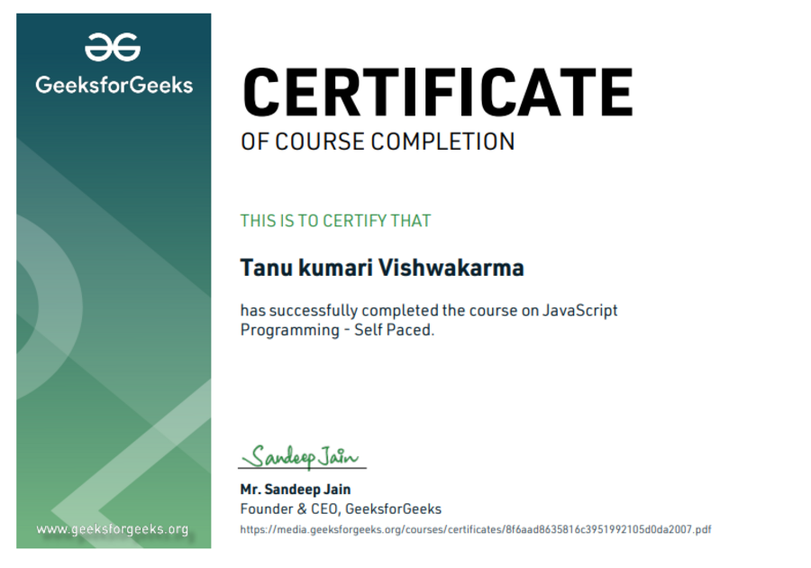
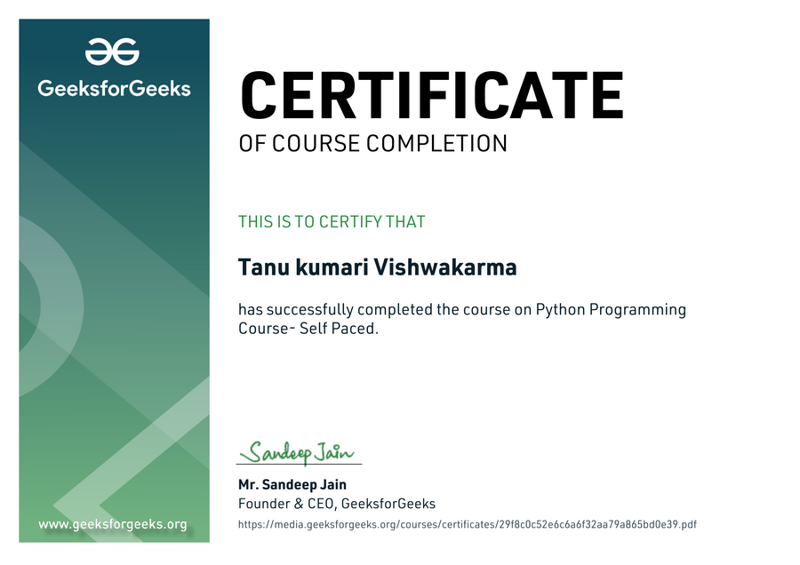

Django · Python · Bootstrap
live
ASALPS
Adaptive Skill Audit & Learning Path System
A full-stack skill-assessment platform that evaluates competencies and recommends a personalized learning path for each learner.
Hazaribagh, Jharkhand — building end to end
Junior Full-Stack Developer
I pair React/Next.js front ends with Python back ends (Django, FastAPI, Flask) and put the result on a real URL, not just a repo. Five self-driven projects, live and working, from database to deploy.
A working stack, used end to end on every project below — not a checklist.
Four of five live projects — each one deployed, not just committed.
Adaptive Skill Audit & Learning Path System
A full-stack skill-assessment platform that evaluates competencies and recommends a personalized learning path for each learner.
Real-time chat application
A React front end talking to a FastAPI back end over WebSockets, with an integrated AI assistant riding in the same chat thread.
Philosophical conversation app
An AI-powered conversational app that holds stateful, multi-turn context across async API calls, with error handling built to survive real traffic.
Bakery e-commerce site
A React storefront with a live-pricing cake builder and a persistent cart, checkout wired straight into WhatsApp Business API.
Certifications completed alongside the shipped projects above.


Also currently pursuing a BCA (self-directed full-stack track), deepening SQL and machine learning.
Open to junior full-stack roles and freelance work. Based in Hazaribagh, Jharkhand — happy to work remote.
+91 97495 59370